『花束みたいな恋をした』という映画を見て、好きなことを好きで居続けられることは当たり前ではなく、簡単でもなく、特別なことだと感じました。成長や変化を強く求められる時代だと感じていますが、自分の大切にしているものは変わらず持ち続けたいです。
illustratorをまだ使いこなせていないので、今回は点描のように丸を多用し、映画で感じとった優しさや温かさ、儚さも表現しようとしてみました。
✎ふとした時に、描きたい時に、描きたいままに描いた、落書きです。（温かい目でみてください）
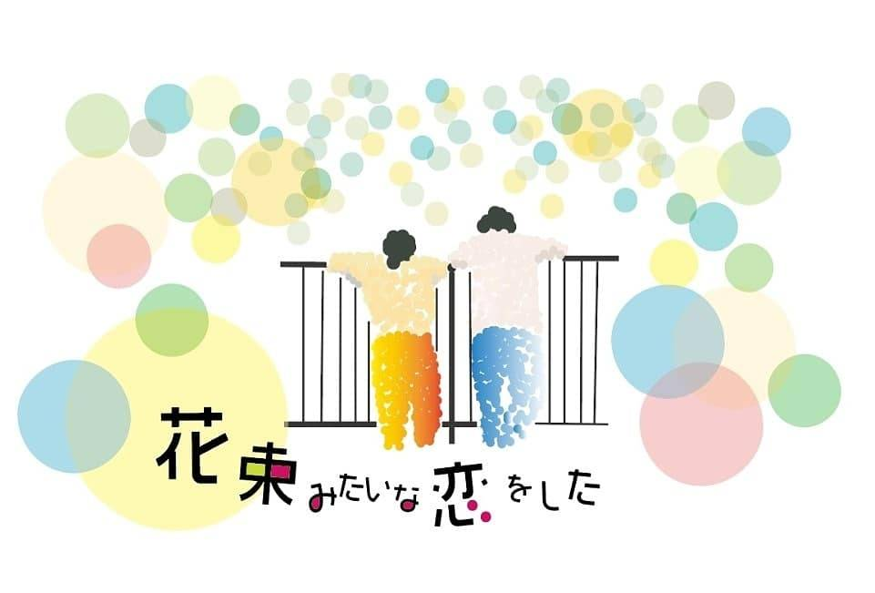
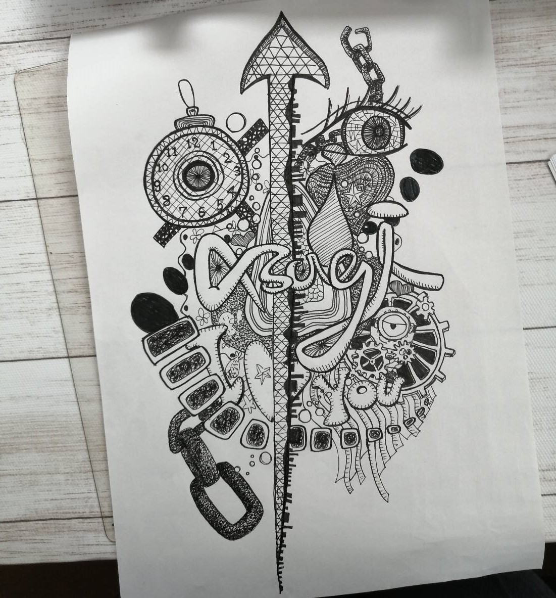
嵐の大野くんの展覧会を見に行った際に、細密画がとても印象的だったので、描いてみました。中央の矢印はその時の、勢いよくまっすぐに進みたいけれども迷いなどの障壁がある気持ちを表しています。頭に浮かんだものを次々と描いたのですが、全体的にまとまりをだすために、顔に見えるような大きなパーツを置きました。懐かしい大切な思い出のイラストも含みました。
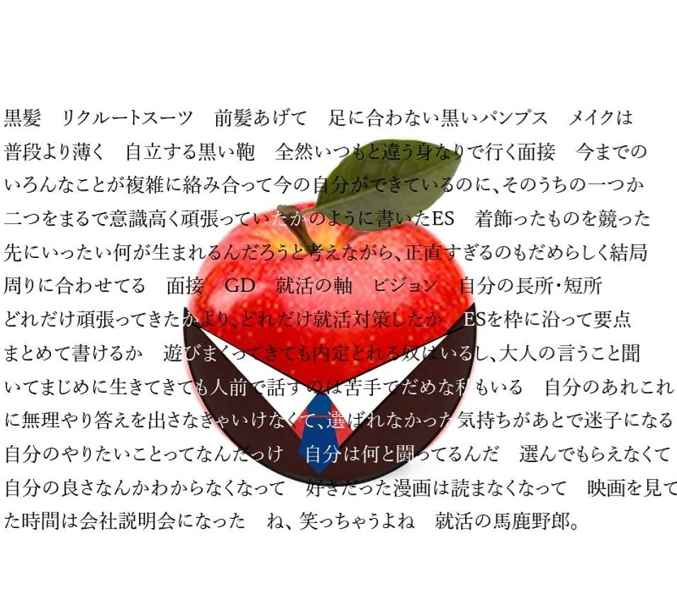
私にとって新卒の就職活動は、なんだか居心地が悪く感じます。マナーや自分の魅せ方のテクニックなどの情報が度を超えて溢れていて、それが常識であり、その型にはまらなければいけないという雰囲気が流れていることに違和感を抱いています。この感情を表すためにりんごにスーツを着せてみました。
やりたいことも分からず、やみくもに就活をしていて悩んでいた時にストレス発散がてらに描いたものなので、多少大げさだったり雑な言葉になってはいますが、全てその時強く思っていた事です。
現在は自分らしく頑張っています。
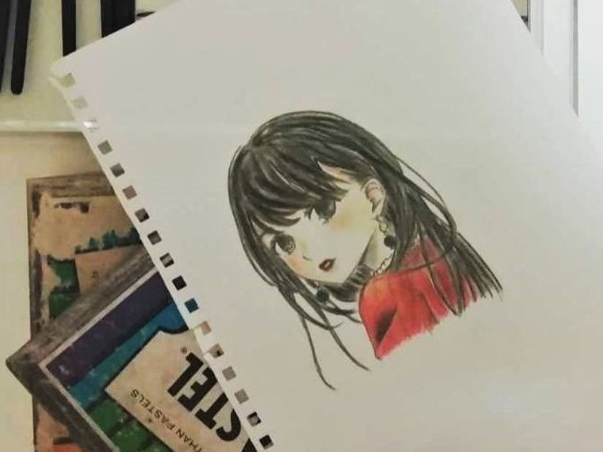
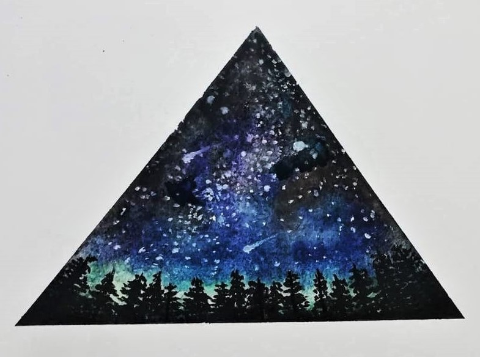
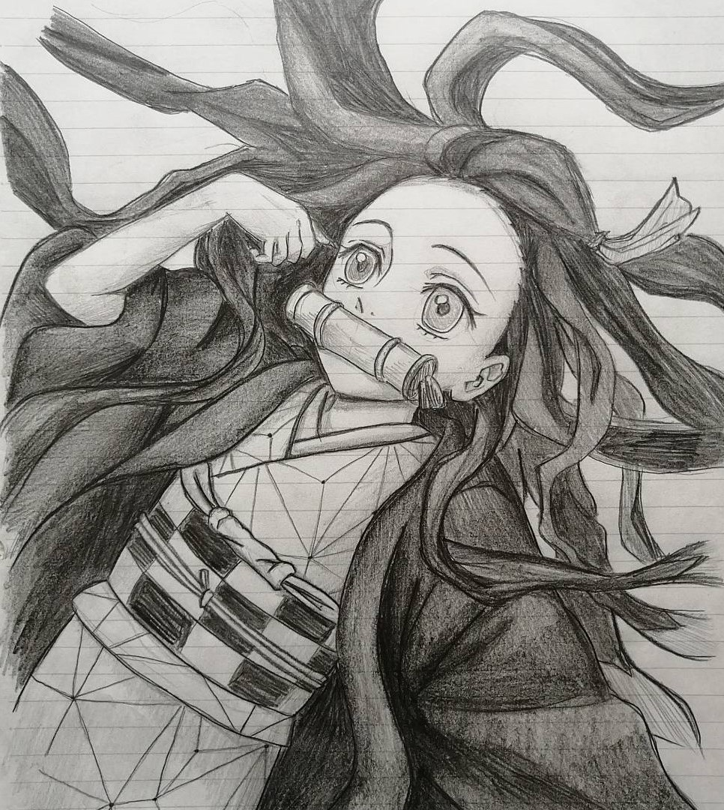
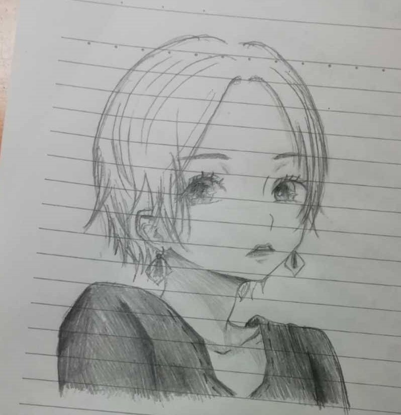
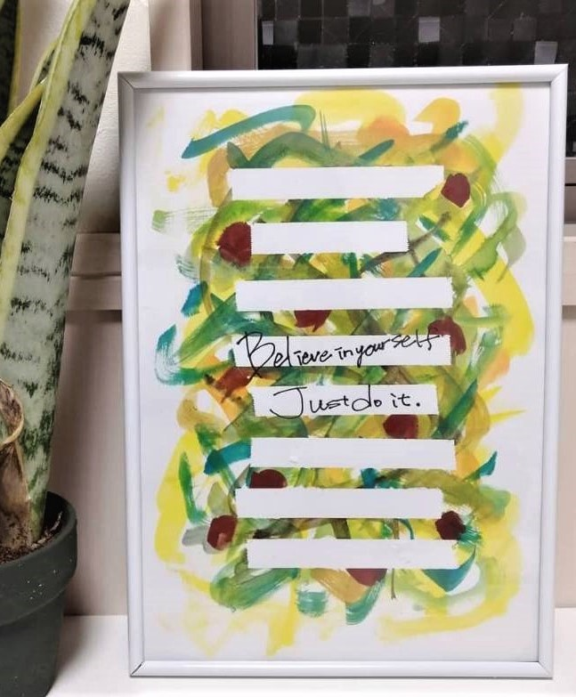
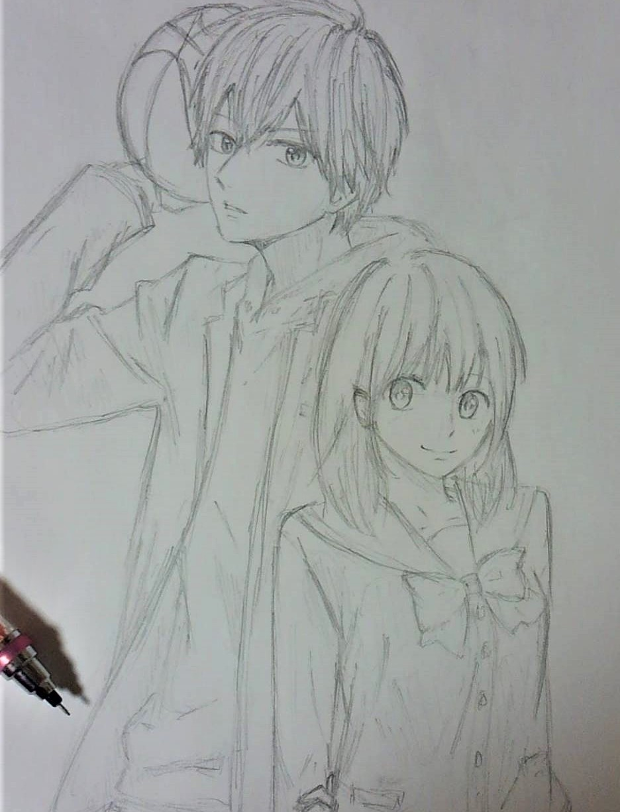
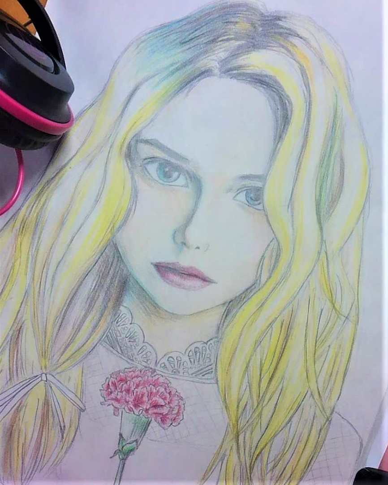
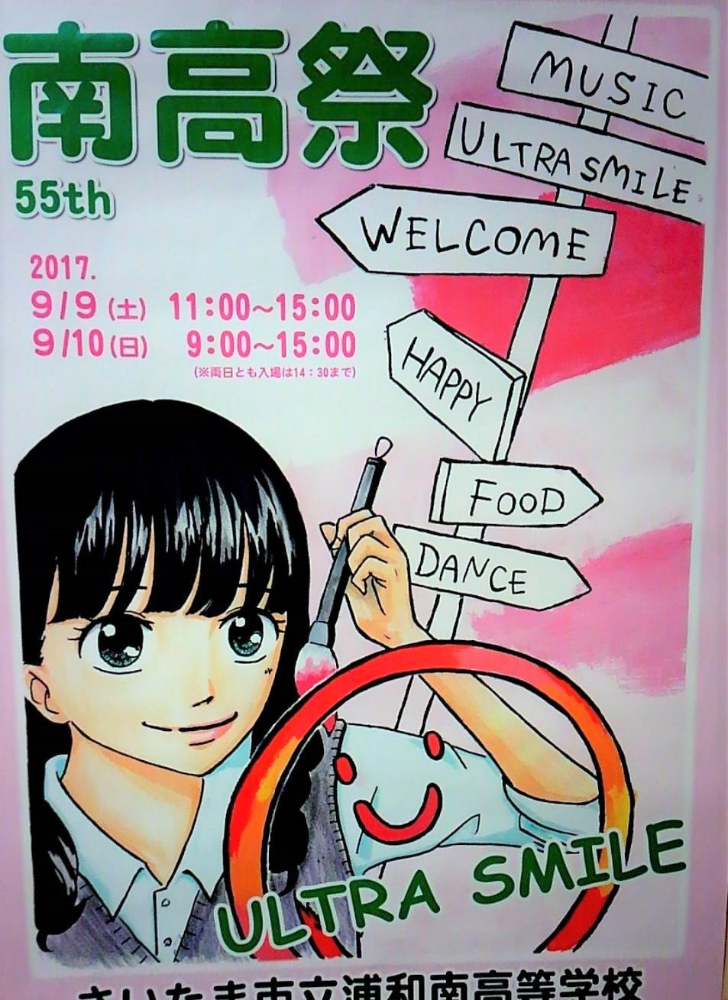